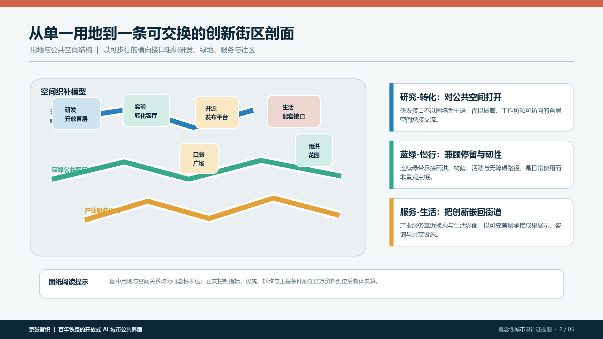
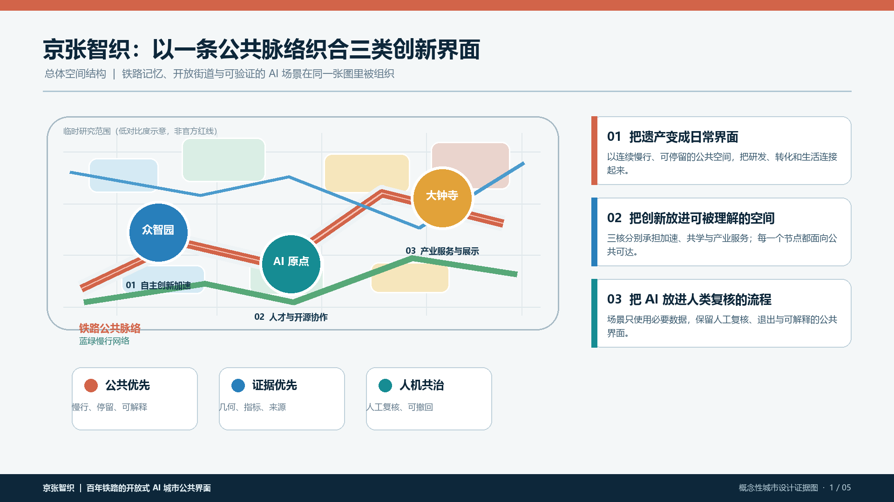
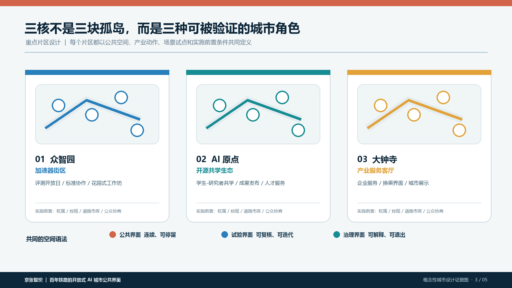
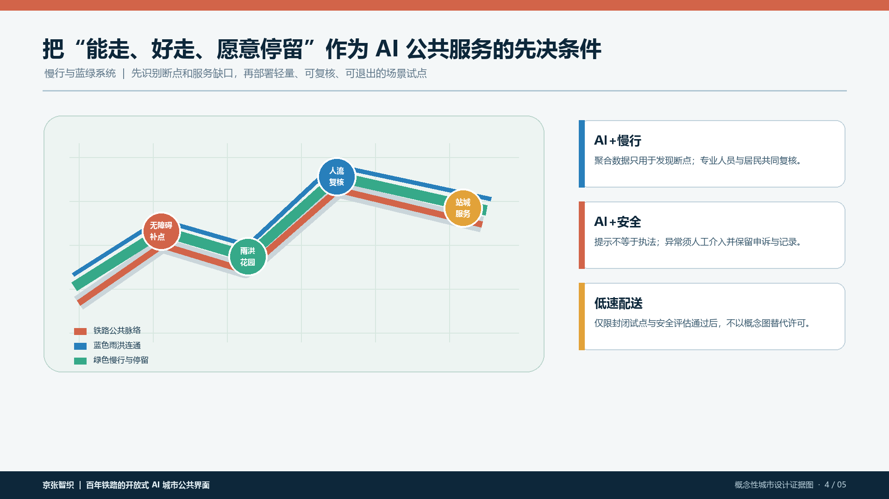
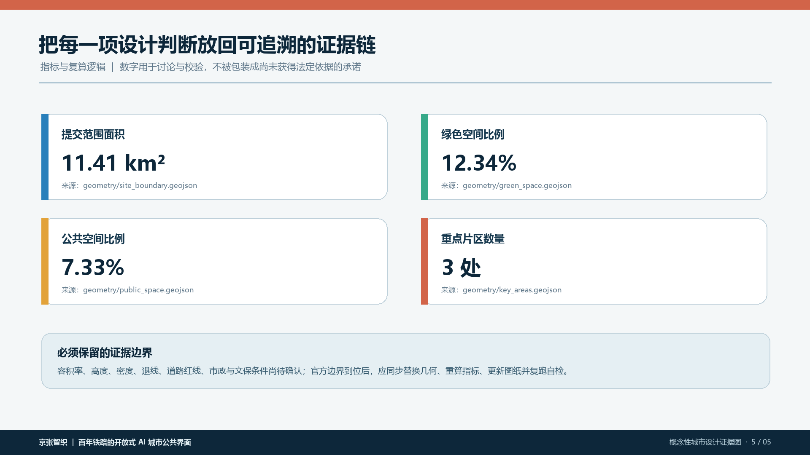

用地与公共空间结构
研发、蓝绿、产业服务与社区接口的织补关系。
从一条铁路公共脉络出发，以三类创新界面组织加速、共学与产业服务；所有空间判断都对应图层、指标、来源、人工复核与后续复算边界。
从铁路记忆到公共界面：总图同时呈现三核、公共脉络、蓝绿慢行网络与设计原则。

每一张图都服务于一个明确的设计判断，避免将指标、场景和实施边界拆散成孤立的文字。

研发、蓝绿、产业服务与社区接口的织补关系。

以空间角色、场景试点和实施条件定义每一核。

把可达性、停留和安全复核作为 AI 服务的前提。

将提交范围的可复算指标和待确认条件同时公开。
可验证的自主创新加速：评测、标准协作、开放工作坊。
近校转化与开源共学：人才、成果和公共学习空间。
产业服务与城市展示：服务接口、换乘与可达的公共客厅。
以下项目与数据标记供离线展示及征集系统核验；详细解释由上方图纸和提交包中的几何、指标、矩阵与自检文件共同提供。
总览地图组织统筹研究范围、总体设计范围与重点区域；三核的定位、公共空间与实施前置条件见“重点区域”图。
用地分区和建筑、更新项目的概念性关系，结合交通慢行与蓝绿公共空间的连续网络表达。
AI 场景遵循人类复核与可退出原则；任务覆盖、自检状态和假设以矩阵、self_check.json 与 assumptions.json 为准。